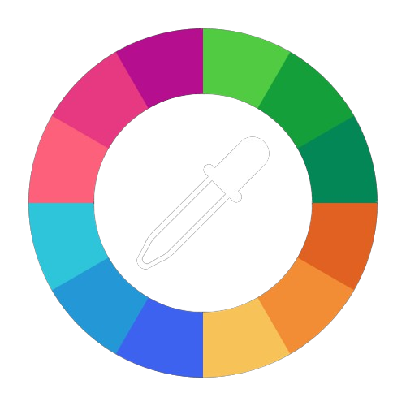

Photo
BeL
Created by Jeriebel B. Calunsag CPE 3
Grayscale
Binary
 Color Hue
Adjustments
Segmentation
Shapes and Colors Detection
Choose an image
Convert
Grayscale Threshold:
255
Binary Threshold:
128
Red:
0
Green:
0
Blue:
0
0
1
1
1
0
0
Filter
None
Sepia
Vivid
Monochrome
Noir
Lark
Amaro
Black and White
Santorini
Tranquil
Gradient
Sunglow
Invert
Original Image
Edited Image